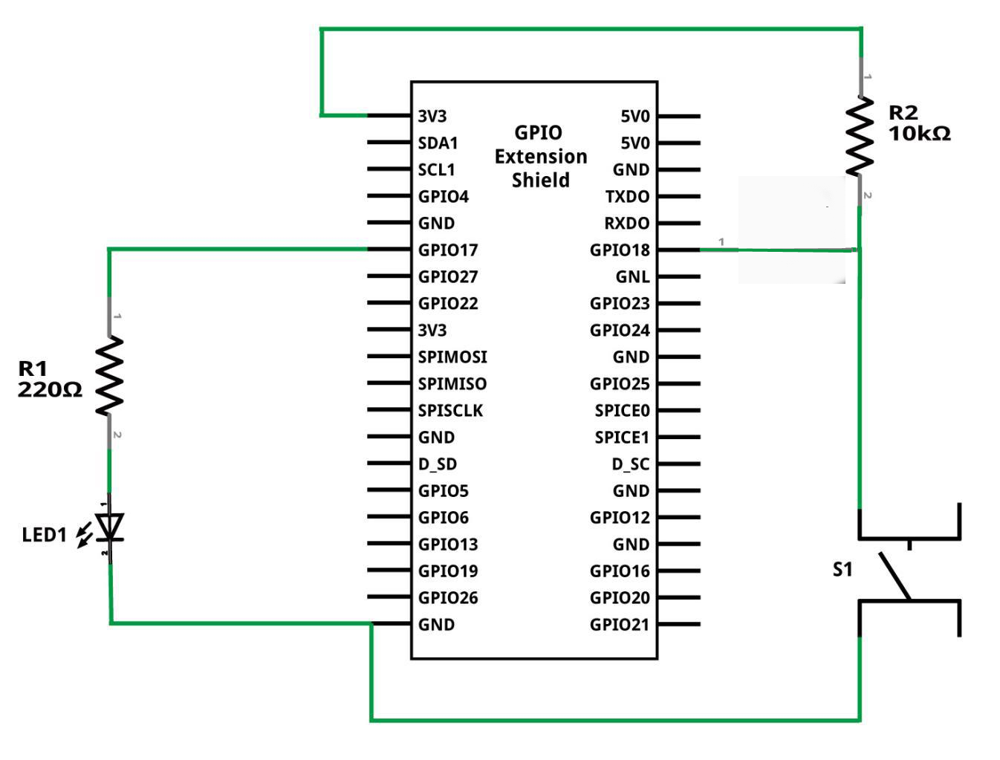
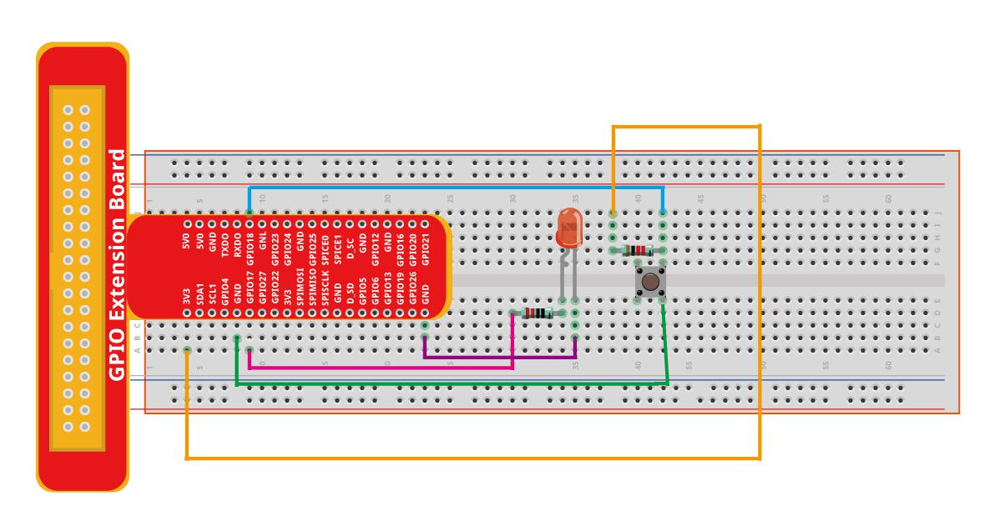

Глава 2: Реакция на кнопку и тревожный индикатор
В этой главе мы расширим функциональность нашего GUI-приложения для Raspberry Pi Zero 2 W. Мы добавим интерактивность с физической кнопкой, подключенной к GPIO, и реализуем систему тревожного оповещения, которая будет активироваться как по нажатию физической кнопки, так и через кнопку в графическом интерфейсе.
—
Введение
Наше приложение теперь будет выполнять следующие действия при активации тревоги:
Светодиод, подключенный к Raspberry Pi, начнет мигать.
В окне графического интерфейса появится мигающая надпись ТРЕВОГА.
В интерфейс будет добавлена специальная кнопка для ручного управления состоянием тревоги (включение/отключение).
—
Подключение компонентов
Для этой главы нам понадобятся следующие компоненты и их подключение к Raspberry Pi:
Светодиод с резистором 220 Ом: Подключается к GPIO17 (пин 11). Это тот же светодиод, что и в Главе 1.
Кнопка: Подключается к GPIO18 (пин 12). Для кнопки используется схема с подтяжкой к питанию (pull-up) и подтяжкой к земле (pull-down) с помощью двух резисторов по 10 кОм.
Ниже представлена схема подключения кнопки и светодиода:
Схема подключения кнопки к GPIO18 (с подтяжкой):
+3.3V
│
[10k] (Pull-up резистор)
│
├──────> GPIO18
│
┌──┴──┐
│ BTN │
└──┬──┘
│
GND
—
Примечание: Эта схема обеспечивает четкое состояние пина GPIO18 (либо HIGH, либо LOW) независимо от того, нажата кнопка или нет, предотвращая «плавающее» состояние.
—
Подтяжка (Pull-up/Pull-down) резисторы
При работе с цифровыми входами микроконтроллеров, таких как GPIO на Raspberry Pi, часто возникает проблема «плавающего» состояния (floating state). Это происходит, когда входной пин не подключен ни к источнику питания (HIGH), ни к земле (LOW) напрямую. В таком состоянии пин может «ловить» электрические шумы из окружающей среды, что приводит к непредсказуемым и ложным срабатываниям.
Для решения этой проблемы используются подтягивающие (pull-up) или стягивающие (pull-down) резисторы.
- Подтягивающий (Pull-up) резистор:
Подключается между входным пином и источником питания (например, +3.3V). Его функция — «подтягивать» напряжение на пине к высокому логическому уровню (HIGH), когда кнопка не нажата (цепь разомкнута). При нажатии кнопки, которая соединяет пин с землей, напряжение на пине становится низким (LOW).
Схема подключения:
Резистор (например, 10 кОм) подключается между GPIO-пином и источником питания (+3.3V).
Кнопка подключается между GPIO-пином и землей (GND).
Визуальная схема:
+3.3V │ [10k] (Pull-up резистор) │ ├──────> GPIO-пин │ ┌──┴──┐ │ BTN │ └──┬──┘ │ GND
- Логика работы:
Кнопка не нажата: Пин GPIO «подтянут» к +3.3V через резистор. Микроконтроллер считывает HIGH (логическую «1»).
Кнопка нажата: Кнопка замыкает пин на GND. Напряжение на пине падает до 0V. Микроконтроллер считывает LOW (логический «0»).
- Особенности:
При нажатии кнопки через резистор протекает небольшой ток (например, 3.3V / 10 кОм = 0.33 мА).
Это наиболее распространенный вариант подключения кнопок.
Многие микроконтроллеры (включая Raspberry Pi) имеют встроенные программно-активируемые pull-up резисторы, что позволяет вообще не использовать внешний резистор для этой цели.
—
- Стягивающий (Pull-down) резистор:
Подключается между входным пином и землей (GND). Его функция — «стягивать» напряжение на пине к низкому логическому уровню (LOW), когда кнопка не нажата. При нажатии кнопки, которая соединяет пин с источником питания, напряжение на пине становится высоким (HIGH).
Схема подключения:
Резистор (например, 10 кОм) подключается между GPIO-пином и землей (GND).
Кнопка подключается между GPIO-пином и источником питания (+3.3V).
Визуальная схема:
+3.3V │ ┌──┴──┐ │ BTN │ └──┬──┘ │ ├──────> GPIO-пин │ [10k] (Pull-down резистор) │ GND
- Логика работы:
Кнопка не нажата: Пин GPIO «стянут» к GND через резистор. Микроконтроллер считывает LOW (логический «0»).
Кнопка нажата: Кнопка замыкает пин на +3.3V. Напряжение на пине поднимается до +3.3V. Микроконтроллер считывает HIGH (логическую «1»).
Зачем они нужны с кнопками? Кнопка — это механический переключатель. Когда кнопка не нажата, цепь разомкнута. Без подтягивающего или стягивающего резистора, входной пин GPIO в этот момент будет находиться в неопределенном состоянии. Микроконтроллер не сможет надежно определить, является ли это состояние логическим HIGH или LOW, что приведет к нестабильной работе и ложным срабатываниям (так называемому «дребезгу» контактов или случайным переключениям).
В нашей схеме для кнопки на GPIO18 используется pull-up к +3.3V. Это обеспечивает четкий логический уровень на пине GPIO18 в обоих состояниях кнопки: * Когда кнопка не нажата, пин GPIO18 подтягивается к HIGH (+3.3V). * Когда кнопка нажата, она замыкает пин GPIO18 на GND, и пин переходит в состояние LOW (0V).
Таким образом, мы всегда имеем определенное состояние на входе GPIO, что делает считывание кнопки надежным.
—
Принцип работы
Логика работы приложения будет следующей:
Светодиод продолжает использоваться с предыдущей главы и подключен к GPIO17.
Кнопка подключена к GPIO18.
При нажатии физической кнопки: * Если тревога неактивна, она активируется. * Светодиод начинает мигать. * На экране появляется мигающий лейбл ТРЕВОГА.
Кнопка в графическом интерфейсе позволяет отключать и включать тревогу вручную, независимо от состояния физической кнопки.
Окно GTK+3 будет обновляться с помощью таймеров для реализации мигания светодиода и текста.
—
Интерфейс
Графический интерфейс будет включать два основных элемента:
Кнопка: С текстом «Включить тревогу» или «Отключить тревогу» в зависимости от текущего состояния.
Мигающий лейбл: Отображает текст «⚠ ТРЕВОГА ⚠» при активной тревоге и исчезает, когда тревога неактивна.
Вот как может выглядеть макет GUI:
—
Код
Ниже представлен полный C-код для реализации описанной функциональности.
#include <gtk/gtk.h> // Основная библиотека GTK для создания графического интерфейса
#include <gpiod.h> // Библиотека libgpiod для взаимодействия с GPIO
#include <stdio.h> // Стандартная библиотека ввода/вывода (например, для perror)
#include <stdlib.h> // Стандартная библиотека для общих утилит
#include <stdbool.h> // Для использования булевых типов (true/false)
// Определение констант для удобства
#define CONSUMER "GUI_for_Zero2W" // Имя потребителя для линий GPIO
#define CHIPNAME "gpiochip0" // Имя GPIO-чипа на Raspberry Pi
#define LED_GPIO 17 // Номер GPIO-пина для светодиода
#define BUTTON_GPIO 18 // Номер GPIO-пина для кнопки
// Структура для хранения указателей на виджеты и состояния приложения
// Эта структура будет передаваться между функциями через gpointer user_data
struct app_widgets {
GtkWidget *button_toggle_alarm; // Указатель на кнопку GTK для управления тревогой
GtkWidget *label_alarm; // Указатель на лейбл GTK для отображения текста "ТРЕВОГА"
struct gpiod_line *led_line; // Указатель на линию GPIO для светодиода
struct gpiod_line *button_line; // Указатель на линию GPIO для кнопки
bool alarm_active; // Флаг: true, если тревога активна; false, если нет
bool led_on; // Флаг: true, если светодиод включен; false, если выключен (для мигания)
guint blink_timer; // Идентификатор таймера для мигания (0, если таймер не активен)
guint poll_timer; // Идентификатор таймера для опроса кнопки (0, если таймер не активен)
};
// Функция, вызываемая по таймеру для мигания светодиода и текста тревоги
gboolean blink_led(gpointer user_data) {
struct app_widgets *app = user_data; // Приводим user_data к типу нашей структуры
if (app->alarm_active) {
// Если тревога активна, переключаем состояние светодиода и текста
app->led_on = !app->led_on; // Инвертируем состояние светодиода
gpiod_line_set_value(app->led_line, app->led_on); // Устанавливаем значение на GPIO
// Обновляем текст лейбла: "ТРЕВОГА" или пустая строка для мигания
gtk_label_set_text(GTK_LABEL(app->label_alarm),
app->led_on ? "⚠ ТРЕВОГА ⚠" : "");
return TRUE; // Возвращаем TRUE, чтобы таймер продолжал работать
} else {
// Если тревога неактивна, выключаем светодиод и очищаем текст
gpiod_line_set_value(app->led_line, 0); // Выключаем светодиод
gtk_label_set_text(GTK_LABEL(app->label_alarm), ""); // Очищаем текст лейбла
return FALSE; // Возвращаем FALSE, чтобы остановить таймер мигания
}
}
// Функция, вызываемая по таймеру для опроса состояния физической кнопки
gboolean poll_button(gpointer user_data) {
struct app_widgets *app = user_data; // Приводим user_data к типу нашей структуры
int val = gpiod_line_get_value(app->button_line); // Считываем значение с линии кнопки
if (val == 0) { // Если кнопка нажата (предполагаем активный низкий уровень при нажатии)
// Если тревога еще не активна, активируем ее
if (!app->alarm_active) {
app->alarm_active = true; // Устанавливаем флаг тревоги в true
// Если таймер мигания не запущен, запускаем его
if (!app->blink_timer) {
app->blink_timer = g_timeout_add(500, blink_led, app); // Запускаем таймер с интервалом 500 мс
}
// Обновляем текст на кнопке GUI
gtk_button_set_label(GTK_BUTTON(app->button_toggle_alarm), "Отключить тревогу");
}
}
return TRUE; // Возвращаем TRUE, чтобы таймер опроса продолжал работать
}
// Функция, вызываемая при нажатии кнопки "Включить/Отключить тревогу" в GUI
void on_toggle_alarm(GtkButton *button, gpointer user_data) {
struct app_widgets *app = user_data; // Приводим user_data к типу нашей структуры
app->alarm_active = !app->alarm_active; // Инвертируем состояние тревоги
if (app->alarm_active) {
// Если тревога активирована через GUI
gtk_button_set_label(button, "Отключить тревогу"); // Меняем текст кнопки
if (!app->blink_timer) {
// Если таймер мигания не запущен, запускаем его
app->blink_timer = g_timeout_add(500, blink_led, app);
}
} else {
// Если тревога деактивирована через GUI
gtk_button_set_label(button, "Включить тревогу"); // Меняем текст кнопки
if (app->blink_timer) {
// Если таймер мигания запущен, останавливаем его
g_source_remove(app->blink_timer);
app->blink_timer = 0; // Сбрасываем идентификатор таймера
}
gpiod_line_set_value(app->led_line, 0); // Выключаем светодиод
gtk_label_set_text(GTK_LABEL(app->label_alarm), ""); // Очищаем текст лейбла
}
}
// Главная функция приложения
int main(int argc, char *argv[]) {
gtk_init(&argc, &argv); // Инициализация библиотеки GTK
// Инициализация GPIO
struct gpiod_chip *chip = gpiod_chip_open_by_name(CHIPNAME); // Открываем GPIO-чип
if (!chip) {
perror("Ошибка открытия GPIO-чипа");
return 1;
}
// Получаем линии GPIO для светодиода и кнопки
struct gpiod_line *led_line = gpiod_chip_get_line(chip, LED_GPIO);
struct gpiod_line *button_line = gpiod_chip_get_line(chip, BUTTON_GPIO);
if (!led_line || !button_line) {
perror("Ошибка получения линий GPIO");
gpiod_chip_close(chip);
return 1;
}
// Запрашиваем линии GPIO: светодиод как выход, кнопка как вход
if (gpiod_line_request_output(led_line, CONSUMER, 0) < 0 || // LED как выход, начальное значение 0
gpiod_line_request_input(button_line, CONSUMER) < 0) { // BUTTON как вход
perror("Ошибка запроса линий GPIO");
gpiod_chip_close(chip);
return 1;
}
// Инициализация структуры app_widgets
struct app_widgets app = {
.led_line = led_line, // Присваиваем указатель на линию светодиода
.button_line = button_line, // Присваиваем указатель на линию кнопки
.alarm_active = false, // Тревога изначально неактивна
.led_on = false, // Светодиод изначально выключен
.blink_timer = 0 // Таймер мигания неактивен
};
// Создание и настройка GTK UI
GtkWidget *window = gtk_window_new(GTK_WINDOW_TOPLEVEL); // Создаем главное окно
gtk_window_set_title(GTK_WINDOW(window), "Тревожный сигнал"); // Устанавливаем заголовок окна
gtk_window_set_default_size(GTK_WINDOW(window), 250, 150); // Устанавливаем размер окна
// Подключаем сигнал закрытия окна к функции выхода из GTK
g_signal_connect(window, "destroy", G_CALLBACK(gtk_main_quit), NULL);
// Создаем вертикальный контейнер для размещения виджетов
GtkWidget *vbox = gtk_box_new(GTK_ORIENTATION_VERTICAL, 10); // Отступ 10 пикселей
gtk_container_add(GTK_CONTAINER(window), vbox); // Добавляем контейнер в окно
// Создаем лейбл для отображения текста тревоги
app.label_alarm = gtk_label_new("");
// Добавляем лейбл в контейнер, расширяя его по вертикали и горизонтали
gtk_box_pack_start(GTK_BOX(vbox), app.label_alarm, TRUE, TRUE, 10);
// Создаем кнопку для управления тревогой
app.button_toggle_alarm = gtk_button_new_with_label("Включить тревогу");
// Добавляем кнопку в контейнер
gtk_box_pack_start(GTK_BOX(vbox), app.button_toggle_alarm, TRUE, TRUE, 10);
// Подключаем сигнал нажатия кнопки к нашей функции on_toggle_alarm
g_signal_connect(app.button_toggle_alarm, "clicked",
G_CALLBACK(on_toggle_alarm), &app);
gtk_widget_show_all(window); // Показываем все виджеты в окне
// Запускаем таймер для периодического опроса физической кнопки
app.poll_timer = g_timeout_add(100, poll_button, &app); // Опрос каждые 100 мс
gtk_main(); // Запускаем основной цикл обработки событий GTK
// --- Очистка ресурсов перед завершением программы ---
gpiod_line_set_value(led_line, 0); // Убедимся, что светодиод выключен
gpiod_line_release(led_line); // Освобождаем линию светодиода
gpiod_line_release(button_line); // Освобождаем линию кнопки
gpiod_chip_close(chip); // Закрываем GPIO-чип
return 0; // Успешное завершение программы
}
Компиляция и запуск Для компиляции и запуска этого приложения на вашем Raspberry Pi Zero 2 W выполните следующие шаги:
Сохраните код: Сохраните приведенный выше C-код в файл, например, led_alarm_gui.c.
Компиляция: Используйте gcc для компиляции. Убедитесь, что у вас установлены библиотеки libgtk-3-dev и libgpiod-dev (как в Главе 1).
gcc led_alarm_gui.c -o led_alarm_gui $(pkg-config --cflags --libs gtk+-3.0 libgpiod) -Wall -Wextra
gcc: Компилятор C.
led_alarm_gui.c : Исходный файл с вашим кодом.
-o led_alarm_gui : Имя выходного исполняемого файла.
$(pkg-config –cflags –libs gtk+-3.0 libgpiod) : Автоматически включает необходимые флаги компилятора и библиотеки для GTK3 и libgpiod.
-Wall -Wextra : Включает все стандартные и дополнительные предупреждения компилятора, что помогает выявлять потенциальные ошибки.
Запуск: После успешной компиляции запустите программу:
./led_alarm_gui
Теперь вы должны увидеть окно GTK с кнопкой и мигающей надписью «ТРЕВОГА» при активации тревоги (либо нажатием физической кнопки, либо кнопкой в GUI).